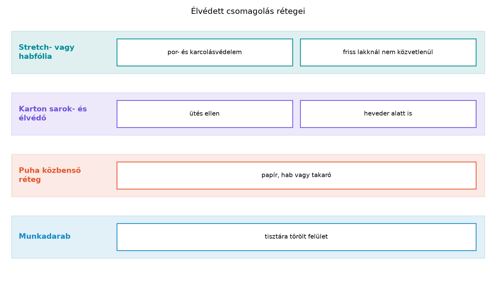

A konyhabútor elkészült, a felülete makulátlan. A szerelő sietve felpakol, a sarokélek védetlenek, a csomaglista kimarad, a lift belső méretét senki sem mérte meg. A helyszínen az egyik él kitörik, hiányzik hat darab csavar, a munkalap pedig nem fér be a liftbe. A javítás időt és pénzt emészt, a megrendelő bizalma pedig meginog.
Ebben az alfejezetben a csomagolás, a szállítás, a helyszíni felmérés és a szerelés előkészítésének lépéseit tanulod meg. Nem elég jól elkészíteni a bútort; a minőséget a megrendelő lakásában is át kell adni.
Egy elkészült bútorlap nem önmagában utazik. A felületét élvédők, puha közbenső réteg, sarokvédő és külső fólia védi. Az alábbi rétegdiagram a külső védőrétegektől a munkadarabig mutatja a csomagolás felépítését.

A rajz azt mutatja, hogy a legkülső réteg a szennyeződést és a karcolásokat fogja fel. A karton sarokvédő a legérzékenyebb, legkönnyebben sérülő éleket és sarkokat védi. A puha közbenső réteg megakadályozza, hogy két lap összecsúszva egymást dörzsölje. A munkadarab csak azután kerül a csomagolásba, hogy a felületét letöröltük, száraz és pormentes.
Definíció. A csomagolás a termék szállítás és helyszíni szerelés közbeni védelmére szolgáló rétegek és rögzítések összessége. A csomaglista a szállítási egységek tartalmának, darabszámának, tömegének és rendeltetési helyének írásos jegyzéke.
Szabály. A csomagolás nem dísz, hanem a gyártási folyamat utolsó minőségbiztosítási lépése. A csomaglista nélkül nem indul el a jármű. A lista teszi ellenőrizhetővé, hogy a helyszínen minden elem, vasalat és kiegészítő ott van-e.
A bútorlapok legérzékenyebb része az él és a sarok. A furnérozott, fóliázott vagy lakkozott élek ütésre könnyen kitöredeznek, ezért élvédőt kell rájuk ragasztani vagy pattintani. A heveder alá mindig kerüljön vastag karton sarokvédő, különben a szorítás benyomja a felületet.
A fólia feladata a por, a nedvesség és a karcok távol tartása. Frissen lakkozott felületre tilos közvetlenül fóliát feszíteni, amíg a bevonat ki nem kötött, mert a fólia alatt megrekedő oldószerpára felhólyagosíthatja a lakkréteget (ellenőrizendő: a gyártói száradási adat). A fóliázás előtt a felület legyen száraz, por- és zsírmentes.
A jelölés mutatja meg, hová tartozik a csomag. Minden csomagra kerüljön: termék vagy helyiség megnevezése, csomagszám, szállítási azonosító, a „törékeny”, „nedvességtől védve”, „felfelé” jelölés. A jelölést nem a díszfóliára, hanem a védőrétegre vagy a kartonra írjuk.
A csomaglista legalább ezeket tartalmazza: tételszám, megnevezés, darabszám, kész méret, anyag, tömeg, csomagolás módja, megjegyzés. A csomaglista és a szerelési lista nem ugyanaz: a csomaglista a szállítási egység, a szerelési lista pedig a beépítéshez szükséges alkatrészek és vasalatok jegyzéke.
Szabály. A járművet a legnagyobb csomag méretéhez, az össztömeghez és a hozzáférési útvonalhoz kell választani. A rakományt úgy kell elhelyezni, hogy menet közben ne mozduljon el, ne boruljon és ne sértse a termékeket.
Figyelem. A közúti szállítás során a rakományt a jármű vezetője által is ellenőrizhető módon kell rögzíteni. A rakományrögzítő hevederek teherbírásának és használatának meg kell felelnie a vonatkozó előírásoknak (ellenőrizendő: KRESZ, valamint a rakományrögzítő rendszer szabványa, pl. EN 12195 sorozat).
Rakodáskor a súlypont alacsonyan legyen, a nehéz elemek alulra, a könnyűek felülre kerüljenek. A nagy felületű lapokat lehetőleg függőlegesen, élszirtre állítva szállítsd, mert vízszintesen fekve könnyen lehajlanak. Minden réteg közé tegyél csúszásgátlót, például habfóliát vagy gumiszőnyeget. A járműben a rakományt hevederrel, elfordulás elleni ékekkel és oldaltámasszal rögzítsd. A heveder ne közvetlenül a bútorlapra feszüljön, hanem sarokvédőre.
A helyszíni felmérés általános menetét a Helyszíni felmérés, vázlatrajz és építőipari rajzok olvasása alfejezetben tanultad. Itt a szerelés előkészítése szempontjából ismételjük át röviden: a felmérés célja, hogy a gyártott és a helyszínen lévő méretek pontosan találkozzanak, és ne a beszereléskor derüljön ki az eltérés.
Definíció. A felmérési jegyzőkönyv a helyszínen rögzített méretek, eltérések, akadályok, hozzáférési útvonalak és a megrendelővel egyeztetett döntések írásos lenyomata.
A jegyzőkönyvhöz mindig tartozzon vázlatrajz. A vázlatrajz legyen felülnézet, oldalnézet vagy a beépítés szempontjából fontos nézet, méretekkel, jelmagyarázattal és fénykép-hivatkozásokkal. A rajzon rögzítsd a fal hosszát három magasságban, a sarok derékszögét, a padló szintkülönbségét, a gépészeti kiállásokat és az ajtók, ablakok mozgásterét.
A vázlaton a sraffozott vastag vonal a fal, a vékony kontúr a munkalap, a szaggatott a korpuszok helye. A legkisebb mért hossz (3010 mm) a mértékadó: végenként 1 mm illesztési hézaggal a munkalap 3010 − 2 · 1 = 3008 mm. A 90,4°-os sarok miatt egy 600 mm mély munkalap hátsó éle mentén kb. 600 · tg 0,4° ≈ 4 mm rés nyílik. A HTML-kiadásban a mért hosszak, a hézag és a sarokszög csúszkával állítható.
A szerelés első lépése nem a helyszínen, hanem a műhelyben történik. A rajz–anyag–művelet hármas itt is érvényes: az összeállítási rajzból anyaglistát, az anyaglistából műveletsort készíts.
A szerelési dokumentáció részei:
Ellenőrző lista. A helyszíni szerelés előkészítése:
A helyszíni szereléshez leggyakrabban nem viszünk helyhez kötött faipari gépet. A munka nagy része akkus fúró-csavarozóval, kézi fűrésszel, vésővel, gyalukéssel, vízmértékkel, mérőszalaggal és szorítókkal végezhető. A gépek közé tartozik a merülőfűrész vezetősínnel, a szúrófűrész, a kézi gyalugép, az ütvefúró és az elszívóval összekötött csiszológép. Minden elektromos kéziszerszámhoz ellenőrzött, ép csatlakozójú hosszabbítót és porzsákos vagy patronos porszívót használj.
A segédanyagok közül ne maradjon ki:
Figyelem. Idegen munkaterületen a munkavégzés kockázata kettős: a saját egészséged és a megrendelő vagyona is veszélyben lehet. Mindig kérdezd meg, hol dolgozhatsz, hol van áram, hol nem léphetsz. Takard le a padlót takarófóliával vagy kartonnal, védd a sarkokat és a bútorokat. A porszívó és a helyi elszívás nem kényelem, hanem egészségvédelem: keményfa-por esetén légzésvédőt is viselj (ellenőrizendő: aktuális fapor-határérték és FFP-osztály). A kábeleket úgy vezesd, hogy ne keresztezzék a közlekedő utat. A felületkezelő és ragasztó anyagok biztonsági adatlapja a helyszínen is legyen elérhető.
Tilos. Tilos a megrendelő padlóját, bútorát védetlenül hagyni. Tilos az áramot visszakapcsolni, ha a vezeték vagy a csatlakozó állapota bizonytalan. Tilos a tűzveszélyes anyagot nyílt láng vagy hőforrás közelében tárolni. Tilos a szerszámot magasban, leeshető helyen hagyni, és tilos a munkaterületet gyermek vagy háziállat jelenlétében felügyelet nélkül hagyni.
Egy konyhabútor elemeit kell a műhelyből a helyszínre szállítani. A csomaglista az alábbi.
| Tétel | Megnevezés | Db | Kész méret (mm) | Anyag | Tömeg/db (kg) | Csomagolás | Megjegyzés |
|---|---|---|---|---|---|---|---|
| 1 | Korpusz oldallap | 4 | 720×560×19 | laminált forgácslap | 5,0 | élvédő + habfólia | jobb-bal jelölve |
| 2 | Munkalap | 1 | 2400×600×38 | forgácslap, fóliázott | 35,6 | karton sarokvédő + fólia | függőlegesen szállítva |
| 3 | Ajtófront | 2 | 720×400×19 | MDF, festett | 4,1 | papírköz + stretch | soronként jelölve |
| 4 | Fiókelőlap | 3 | 120×400×19 | MDF, festett | 0,7 | papírköz | kötegelve |
| 5 | Vasalatkészlet | 1 | doboz | fém, műanyag | 8,5 | zárt doboz | csavar, csuklópánt, fogantyú |
A tömeg/db a méretből és a tájékoztató sűrűségből számolt érték: tömeg = térfogat × sűrűség (forgácslap kb. 650, MDF kb. 750 kg/m³ – tájékoztató, ellenőrizendő: gyártói adatlap).
Számítás. Az össztömeg a csomagolóanyag nélkül:
Tegyük hozzá a csomagolóanyagok tömegét, becsült 8 %-ot:
Ha a kisteherautó hasznos teherbírása például 800 kg (ellenőrizendő: a jármű forgalmi engedélye szerint), akkor ez a rakomány bőségesen elfér. A legnagyobb elem a 2400 mm hosszú munkalap. Ha a lift belső mérete csak 1400 mm mély, a munkalap nem fér be a liftbe, ezért lépcsőn kell felvinni, és a csomagolását karton sarokvédővel meg kell erősíteni.
A munkalap csomagolt mérete legyen 2500 × 650 × 60 mm. A csomagolt térfogata:
Ez a térfogat könnyen elfér a raktérben, de a 2,5 m hosszúság miatt a jármű rakterének hossza legalább 2,6 m legyen, és a lapot élére állítva, elmozdulás ellen rögzíteni kell.
Továbbvitt eredmény. A csomaglista, a tömeg- és térfogatszámítás, valamint a szerelési előkészítés ellenőrzőlistája közvetlenül megalapozza a Bútoripari és belsőépítészeti termékek helyszíni szerelése és az Épületasztalos-ipari és kültéri termékek helyszíni beépítése alfejezetekben tanulandó szerelési műveleteket.
A csomagolás és előkészítés során ellenőrizd:
Ha bármelyik hiányzik, az indulás előtt pótolni kell. A helyszínen a hiány már állásidőt, utazást vagy rögtönzött, rosszabb minőségű megoldást okoz.
1. hiba: a sarokél nincs védve, a heveder benyomja a
bútorlapot.
Oka: a szerelő spórol a sarokvédővel. A heveder szorítása a furnér vagy
fólia alatt benyomódást okoz, ami a helyszínen már csak csiszolással,
retussal vagy cserével javítható.
Helyes gyakorlat: minden heveder alá karton sarokvédő, a lapok közé
csúszásgátló.
2. hiba: a csomaglista hiánya miatt a helyszínen derül ki a
hiányzó elem.
Oka: a műhelyben nem ellenőrizték a szállítmányt. Ez félnapos állást,
újabb kiszállást és a megrendelői bizalom elvesztését okozza.
Helyes gyakorlat: a csomaglista alapján minden csomagot a járműbe rakás
előtt le kell ellenőrizni.
3. hiba: a szállítás előtt nem ellenőrzik újra a helyszíni
méretet.
Oka: a gyártás után megváltozhatott a fal állapota, vagy a felmérésben
hiba volt. A munkalap nem fér be, a hézag túl nagy vagy túl szűk.
Helyes gyakorlat: a szerelés napján is rögzítsük a legfontosabb
méreteket, és a vágás előtt legyen friss felmérési jegyzőkönyv.
4. hiba: a szerszám akkumulátora nincs feltöltve,
pótakkumulátor nincs.
Oka: a szerszámlista összeállítása elmaradt. A helyszínen nincs hová
elmenni gyorsan tölteni.
Helyes gyakorlat: indulás előtt minden akkumulátort ellenőrizni, pótot
és töltőt vinni.
Egy tanuló konyhabútor-szerelésre készült. A műhelyben a munkalapot nem állította élvédőbe, mert úgy gondolta, a fólia elég. A lépcsőházi fordulóban a lap sarka megütötte a falat, és a sarkon a fólia alatt kitöredezett az él. A helyszínen már csak javítóviasszal lehetett elrejteni a sérülést, de a megrendelő észrevette. A tanulság: a csomagolás legfontosabb része a sarok- és élvédelem, nem a fólia. A másik hiba az volt, hogy a lift méretét nem ellenőrizték, ezért a munkalapot a szűk lépcsőházban kellett felvinni. Ha a hozzáférési útvonalat előre felmérik, a csomagolást ahhoz igazíthatták volna.
1. feladat (A). Definiáld a csomaglistát, és sorold fel legalább négy tartalmi elemét!
2. feladat (A). Írd le a csomagolás rétegeit kívülről befelé, és mindegyik réteghez adj egy funkciót!
3. feladat (B). Egy munkalap csomagolt mérete 2500 mm × 650 mm × 60 mm. Számítsd ki a csomagolt térfogatát köbméterben, és ellenőrizd, mekkora raktérhossz szükséges, ha a munkalapot élére állítva, hosszában szállítod!
4. feladat (B). Állíts össze rövid szerszám- és anyaglistát egy kétkorpuszos konyhaszekrény helyszíni szereléséhez! Indokold, miért viszel porszívót!
5. feladat (C). Helyszíni felmérési jegyzőkönyv szerint a két sarokfal közötti távolság három magasságban: a lábazat magasságában 3012 mm, a munkalap magasságában (900 mm) 3010 mm, a felsőszekrény alsó élénél 3013 mm. A munkalap gyártott hossza (a vázlat 3008 mm-es tervezett méretétől eltérően, hibás esetként) 3011 mm. Milyen kockázatot látsz, és mit javasolsz?
6. feladat (D). Készíts egy egynapos szerelési ütemtervet egy konyhabútor helyszíni szerelésére: érkezés, munkaterület védelme, korpuszok összeállítása, munkalap és frontok beállítása, takarítás, átadás. Add meg az időpontokat és az ellenőrzési pontokat!
1. feladat. A csomaglista a szállítási egységek tartalmának, darabszámának, tömegének és rendeltetési helyének írásos jegyzéke. Tartalmi elemei például: tételszám, megnevezés, darabszám, kész méret, anyag, tömeg, csomagolás módja, megjegyzés.
2. feladat. A rétegek kívülről befelé: stretch- vagy habfólia (por- és karcolásvédelem), karton sarok- és élvédő (ütés elleni védelem és heveder alá), puha közbenső réteg (összedörzsölődés ellen), munkadarab (tisztára törölt felülettel). A friss lakkra nem szabad közvetlenül fóliát húzni, amíg meg nem kötött, mert pára és oldószer záródik alá.
3. feladat.
A csomagolt hossz 2500 mm, tehát a raktérnek legalább 2,5 m-nél hosszabbnak kell lennie; biztonsággal legalább 2,6 m szükséges. A lapot élére állítva szállítsd, elmozdulás ellen rögzítve.
4. feladat. Szerszámok: akkus fúró-csavarozó, pótakkumulátor, mérőszalag, vízmérték, derékszög, szorítóheveder, kézi fűrész, véső, gumikalapács, porszívó, hosszabbító, takarófólia. Anyagok: csavarok, tiplik, sarokkötő vasalatok, ékek, filctalpak, akril tömítő, javítóviasz. A porszívót azért visszük, mert a fúrás és méretre igazítás során keletkező por szennyezi a lakást, káros az egészségre, és a tiszta munkaterület a szakszerű munkavégzés része.
5. feladat. A fal legkisebb mért hossza (3010 mm) a mértékadó; a munkalap hossza . A gyártott munkalap 3011 mm. Így a munkalap a legszűkebb ponton szorulhat, és a beépítéskor nem marad szerelési hézag. A megoldás: a munkalapot a legkisebb méret alá kell alakítani úgy, hogy legalább 3–5 mm oldalhézag maradjon, azaz a munkalap hossza 3005–3006 mm köré kerüljön; emellett a fal egyenetlensége miatt a vágást a helyszínen, mérés után kell elvégezni. A szoros hézag azért veszélyes, mert a fal mozgása, hőtágulás és a szerelési pontatlanság miatt a munkalap felnyomódhat.
6. feladat. Például: 8:00 érkezés, teherből kipakolás; 8:20–8:40 munkaterület védelme, padló letakarása; 8:40–9:00 szerelési lista és csomaglista ellenőrzése; 9:00–12:00 korpuszok összeállítása, lábak beállítása, hátfalak rögzítése; 12:00–12:30 ebéd, szellőztetés; 12:30–14:30 munkalap rögzítése, ajtófrontok és fiókok beállítása; 14:30–15:30 takarítás, a védőrétegek eltávolítása; 15:30–16:00 átadás, jegyzőkönyv aláíratása. Ellenőrzési pont például: a korpuszok függőlegessége vízmértékkel, a frontok hézagai egyenletesek-e, a fiókok könnyen járnak-e, a munkalap hézagai egyenletesek-e.
A csomagolás a termék szállítás és szerelés közbeni védelmére szolgáló rétegek és rögzítések összessége. Legfontosabb elemei az élvédők, a sarokvédők, a puha közbenső réteg és a külső fólia. A csomaglista a szállítási egységek tartalmának, tömegének és rendeltetésének jegyzéke; nélküle nem indulhat el a jármű. Szállításkor a súlypont alacsonyan legyen, a nagy lapokat függőlegesen, de hevederrel és sarokvédővel rögzítsd. A felmérési jegyzőkönyv a helyszíni méretek, eltérések, akadályok és egyeztetett döntések írásos dokumentuma; a friss mérés a szerelés napján is kötelező. A helyszíni szerelés előkészítése a rajz–anyag–művelet hármas szerint történik: összeállítási rajz → anyag- és szerszámlista → szerelési sorrend. Idegen munkaterületen a munkavédelem kettős: a saját egészséged és a megrendelő vagyona. A port elszívással és légzésvédelemmel kell kezelni, a kábeleket biztonságosan kell vezetni, a padlót takarni, a szerszámokat rendben tartani. A csomagolás és a szerelés előkészítése közvetlenül megalapozza a bútoripari és épületasztalos-ipari helyszíni szerelés műveleteit.
Továbbvitt eredmény. A csomaglista, a szállítási rögzítés, a helyszíni felmérési jegyzőkönyv és a szerelési dokumentáció ellenőrzése a Bútoripari és belsőépítészeti termékek helyszíni szerelése és az Épületasztalos-ipari és kültéri termékek helyszíni beépítése alfejezetekben közvetlenül felhasznált előkészítő lépés.
A fejezet a csomagolás, rakományrögzítés és munkavédelem általános műhelygyakorlatára épít. Ellenőrizendő: a rakományrögzítésre vonatkozó közúti előírások hatályos szövege, a hevederek teherbírásának szabványi hivatkozása (EN 12195 sorozat), a fapor-határérték és az FFP-légzésvédő osztályok, a friss lakk fóliázhatóságának gyártói száradási adatai, a csomagolóanyagok műszaki adatlapjai, valamint a jármű hasznos teherbírására vonatkozó forgalmi engedély adatai. A tömeg- és méretadatok a kidolgozott példában mintaadatok, gyártói és termékadatoktól függően változhatnak.